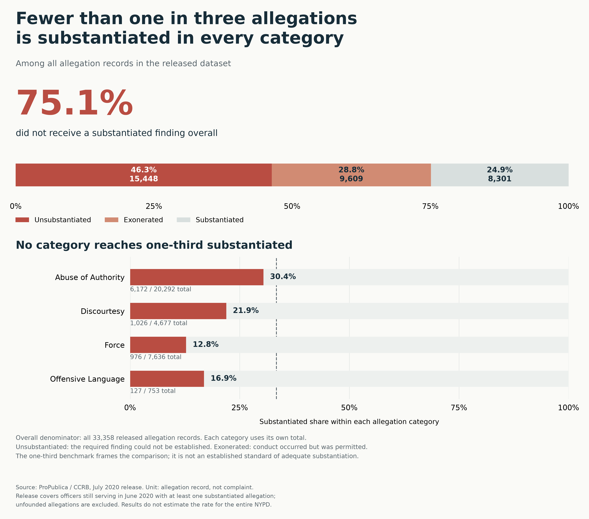
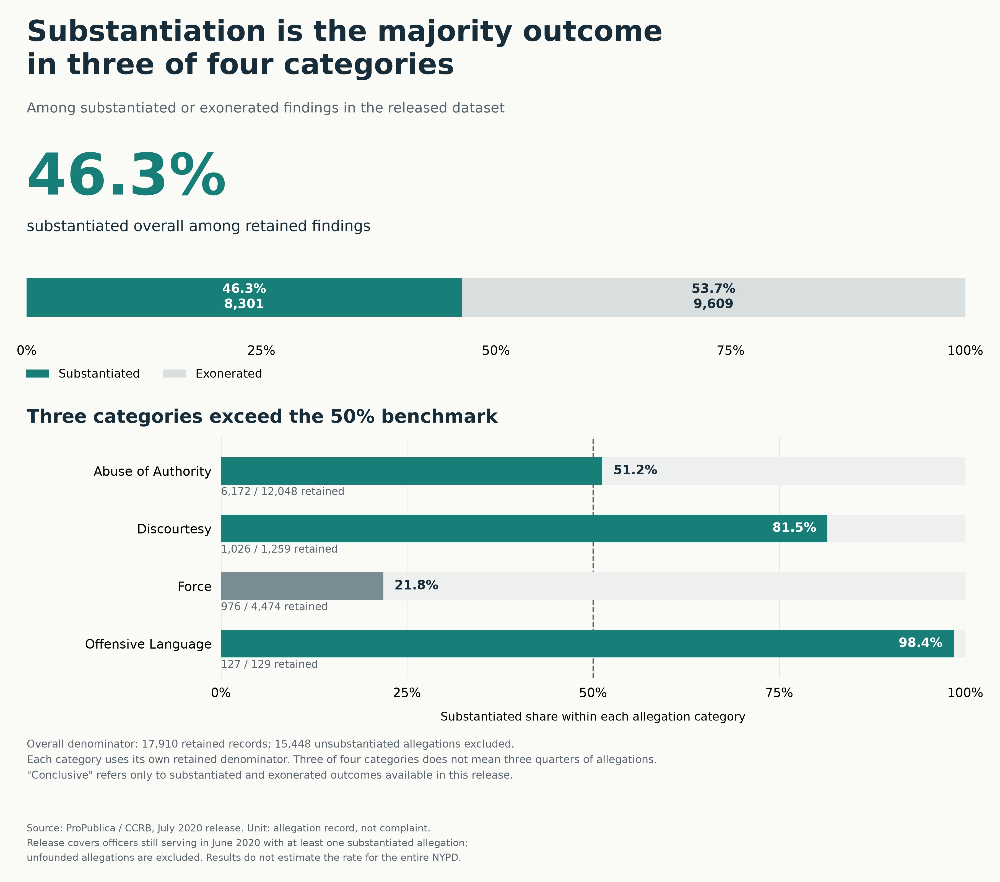

Proposition: The NYPD civilian complaint process rarely substantiates allegations of officer misconduct.
These visualizations use ProPublica’s July 2020 release of civilian complaint records from the New York City Civilian Complaint Review Board (CCRB). Each observation is an allegation record, rather than a unique complaint. The release covers officers still serving in June 2020 who had at least one substantiated allegation and excludes unfounded allegations. These selection rules mean the percentages do not estimate the substantiation rate for the entire NYPD complaint process.
For the Proposition

Design Decisions and Rationale
Scores range from −2 (fully deceptive) to +2 (fully earnest).
- Headline and benchmark framing. Score: −1 The large 75.1% headline emphasizes the share without substantiation, while “fewer than one in three” presents the category results as consistently low. Compared with foregrounding the 8,301 substantiated allegations, this framing makes substantiation appear uncommon. The one-third reference line reinforces that impression, but it is a chosen benchmark rather than an established standard for how often allegations should be substantiated.
- Similar colors for distinct outcomes. Score: −0.5 Similar warm colors associate unsubstantiated and exonerated allegations as a shared group without substantiation. Compared with three equally distinct colors, this makes the combined 75.1% more prominent. The labels preserve the distinction, but the grouping risks blurring insufficient evidence with conduct that occurred and was permitted by NYPD rules.
- Category-specific rates rather than raw counts. Score: +1.5 We group records into all four allegation categories and divide each substantiated count by its category total. This reveals whether the overall pattern persists across different types of allegations, whereas raw counts would be dominated by larger categories. Displaying each numerator and denominator also makes the differences in sample size visible.
- Length encoding and percentage references. Score: +0.5 The stacked overview and category bars use length rather than pie-chart angles, with direct numerical labels to support interpretation. The category bars share a zero baseline and a complete percentage scale, making their substantiated shares easier to compare. All categories remain visible, including Abuse of Authority, which comes closest to the one-third benchmark.
Against the Proposition

Design Decisions and Rationale
Scores range from −2 (fully deceptive) to +2 (fully earnest).
- Filtering and changing the denominator. Score: −1.5 We retain only substantiated and exonerated findings, raising the overall substantiated share from 24.9% to 46.3% without changing its count. Keeping all outcomes would weaken the opposing impression; filtering creates a stronger contrast by answering a narrower question. Unsubstantiated allegations were also fully investigated, so their exclusion does not establish that the process commonly substantiates allegations overall.
- Emphasizing categories rather than their sizes. Score: −1 The title emphasizes that substantiation is the majority outcome in three of four categories, giving each category equal rhetorical importance despite different record counts. This makes the pattern sound more widespread than the overall 46.3% alone, but three of four categories does not mean three quarters of allegations. All categories and their denominators remain visible, including the Force exception and the 129 retained Offensive Language records.
- Majority benchmark and color emphasis. Score: +0.5 The 50% reference line provides a clear benchmark for the title’s majority claim, and teal highlights the three categories exceeding it. The Force bar remains visible in a muted color rather than being removed. Compared with highlighting all categories identically, this guides attention toward the opposing argument while retaining the counterexample. The complete percentage scale and labels let readers check the comparison.
- Disclosing denominators and exclusions. Score: +1.5 Each category displays its substantiated count and retained denominator, and the note identifies the 15,448 excluded allegations. Compared with omitting these details, the disclosure helps readers recognize the filtering and the small retained sample behind the 98.4% Offensive Language result. Its lower prominence than the headline means disclosure reduces, but does not eliminate, the risk of overgeneralization.
Final Reflection
In the process of designing the visuals, grouping the outcomes and calculating the percentages was straightforward. The harder part was making both sides persuasive without changing the underlying substantiated counts. We were surprised that excluding unsubstantiated allegations changed the overall rate from 24.9% to 46.3%. Breaking the results down by category made the contrast stronger: every category was below one-third substantiated when all records were included, but three of four exceeded half after filtering. However, Offensive Language had only 129 retained records, showing why an impressive percentage needs its denominator. Accounting for the release’s selected officers and excluded unfounded allegations was another difficulty. These choices showed us how grouping, denominators, benchmarks, and wording can influence the reader’s impression.
We define ethical analysis and visualization as work that represents evidence responsibly and considers its consequences for others. Misinformation can cause poor decisions, unwarranted fear or hostility, and injustice, although presenting accurate but upsetting findings is not itself unethical. For our topic, either chart could become unethical if used to encourage unsupported conclusions that harm victims of police misconduct or unfairly characterize officers. The first could imply that every allegation without substantiation represents misconduct the process failed to recognize. The second could imply that the process reliably establishes misconduct while overlooking the many unsubstantiated allegations. Neither conclusion follows from the displayed percentages alone.
The line between acceptable persuasive choices and misleading ones is difficult to draw, and we should be careful when applying those labels. A visualization can reasonably focus on one aspect of reality or a subset of the data to communicate a message, provided that its scope is clear and its conclusions fit the evidence. We consider choices misleading when they encourage an unfounded or logically incorrect interpretation by obscuring important context, blurring distinct outcomes, or exploiting readers’ expectations. A presentation does not have to state the exact opposite of reality, or intend harm, to mislead. Our charts demonstrate that accurate numbers alone are insufficient: readers also need to understand the denominator and what the findings do and do not establish.
Data Source and Definitions
ProPublica: Civilian Complaints Against New York
City Police Officers
,
July 2020 release. Calculations use the supplied
allegations_202007271729.csv file.
- Substantiated: The alleged conduct occurred and violated NYPD rules.
- Exonerated: The alleged conduct occurred but did not violate NYPD rules.
- Unsubstantiated: Investigators could not establish both that the conduct occurred and that it violated the rules.
All substantiated subcategories are combined. One complaint may contain multiple allegation records. Substantiation does not necessarily mean that discipline was imposed.
In Figure 1, each category’s substantiated count is divided by all released records in that category. In Figure 2, it is divided by the substantiated and exonerated records in that category. The overall percentages use the corresponding combined counts across categories, rather than an unweighted average of the four category percentages.
Any reference to “conclusive” findings is limited to substantiated and exonerated outcomes available in this release. Unfounded allegations are absent, and unsubstantiated allegations were also fully investigated.